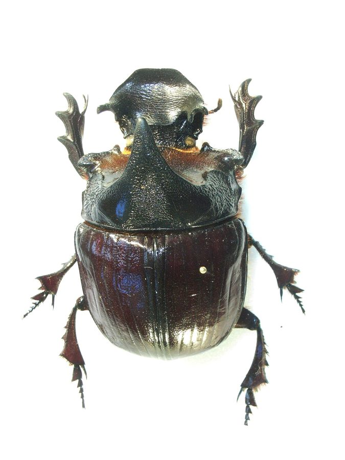

गोबर भृंगElephant Dung Beetle
Heliocopris dominus · Scarabaeidae · INS-0013

- Scientific name
- Heliocopris dominus Bates, 1868
- Family
- Scarabaeidae
- Hindi
- गोबर भृंग
- Status here
- native
- IUCN
- not evaluated
When to look कब देखें
Present all year.
गोबर भृंग / Elephant Dung Beetle
Heliocopris dominus Bates, 1868 — Scarabaeidae
गोबर भृंग — पूर्वी उत्तर प्रदेश के ग्रामीण क्षेत्रों में पाया जाने वाला एक अत्यंत बड़ा, भारी और मजबूत काले रंग का भृंग (बीटल)। यह अपने बड़े आकार और गाय-भैंस के गोबर की बड़ी-बड़ी गेंदें बनाकर उन्हें मिट्टी में दफनाने के व्यवहार के लिए जाना जाता है। इसे स्थानीय स्तर पर 'गोबरैला' भी कहा जाता है। ग्रामीण पशुपालन क्षेत्रों में, यह गोबर को दफनाकर मिट्टी को उपजाऊ बनाने, मक्खियों और परजीवियों के प्रजनन को रोकने और मिट्टी के वातन (aeration) में एक महत्वपूर्ण पारिस्थितिक भूमिका निभाता है।
Quick Identification त्वरित पहचान
| Feature | Description |
|---|---|
| Form | Massive, heavily armored, oval-cylindrical body; one of the largest dung beetles in India |
| Coloration | Pitch black to dark reddish-black, with a dull or slightly glossy surface |
| Head and Pronotum | Broad head with a shovel-like front margin (clypeus); males have a prominent horn on the head |
| Legs | Thick, powerful legs; forelegs are strongly toothed (fossorial) adapted for digging and rolling dung |
| Wings | Hard, leathery forewings (elytra) with longitudinal grooves (striae), covering the abdomen |
| Behavior | Nocturnal or crepuscular; active flyer, attracted to light; creates large, underground dung balls |
Field tip: Look for an exceptionally large, heavy black beetle (5–7 cm long) near cattle sheds or fresh dung heaps. Its shovel-like head, horned pronotum (in males), and thick, saw-toothed front legs are unmistakable. Often heard flying with a loud, low buzz at dusk.
Morphology आकारिकी
| Measurement | Range |
|---|---|
| Body length | 50–70 mm |
| Forewing length | 30–45 mm |
Body structure: Extremely robust and heavily sclerotized. The body is convex and broadly oval. The head is flat, equipped with a shovel-like clypeus used to cut and shovel dung.
Sexual dimorphism:
- Males: Bear a distinct, upward-curved horn on the head (epicranial horn) and a steep, sculptured thoracic shield (pronotum) with lateral protrusions.
- Females: Lack the prominent horn, possessing instead a small transverse ridge on the head.
Elytra: The hard forewings (elytra) cover the entire abdomen, marked with shallow longitudinal lines (striae). Beneath the elytra are large, membranous hindwings that allow this heavy insect to fly efficiently.
Legs: Specifically adapted for digging (fossorial). The tibia of the forelegs is broad and armed with 3–4 large teeth on the outer margin, acting like a spade to dig through clayey soil and shape dung.
Ecological Role पारिस्थितिक भूमिका
Dung burial. Heliocopris dominus is a tunnel-making (telecoprid/endocoprid) dung beetle. It cuts portions of fresh herbivore dung, shapes them into balls, and rolls or drags them into tunnels dug directly beneath or near the dung pad.
Nutrient cycling in UP cattle farming. In eastern UP villages where livestock (cows and buffaloes) are abundant, these beetles bury massive amounts of dung deep into the soil (up to 0.5 to 1 meter deep). This process directly transports organic nitrogen, phosphorus, and potassium into the crop root zones, reducing ammonia volatilization and nitrogen loss, thereby acting as a natural fertilizer.
Fly and parasite suppression. By rapidly burying and consuming fresh dung, they remove the primary breeding substrate for disease-carrying filth flies (Musca domestica) and biting horn flies. Furthermore, the burying and processing of dung destroys the eggs and larvae of gastrointestinal nematodes (parasitic worms) that infect village cattle, breaking the parasite transmission cycle.
Soil aeration. Their deep burrowing activities break up hard clayey soil, improving soil aeration, porosity, and water infiltration capacity.
Life Cycle / Phenology जीवन चक्र
- Monsoon emergence: Adults remain dormant underground during the dry season and emerge in large numbers with the first monsoon rains in June-July.
- Nesting: Mated pairs dig deep vertical shafts under dung piles. They transport dung into these shafts to form large, spherical "brood balls."
- Egg laying: The female deposits a single, large egg inside a chamber in each brood ball and seals it with dung and soil.
- Development: The larva hatches and feeds entirely on the dung inside the brood ball. It passes through three larval instars, pupating within the hollowed shell of the ball. The complete cycle from egg to adult takes about 3–4 months, with new adults staying in the soil until the next monsoon.
Host Plants or Prey आहार
Dietary habits: Coprophagous (dung-feeding) both as larvae and adults.
- Primary food: Fresh cattle dung (cow and buffalo dung) in village pastures.
- Secondary food: Historically, elephant dung in forested areas, but in agricultural eastern UP, they have adapted entirely to domestic livestock dung.
Predators / Natural Enemies शत्रु
- Birds — Large owls, crows, and raptors.
- Mammals — Mongooses (MAM-0002), civets, and rodents.
- Reptiles — Large monitor lizards (Varanus bengalensis).
- Parasitic mites — Often seen clinging to the beetle's underside, feeding on its hemolymph or using it for transport (phoresy).
Agricultural / Human Relevance कृषि प्रासंगिकता
Agricultural sanitation. In eastern UP farming districts, cattle dung management is a significant challenge. These giant beetles function as an unpaid sanitary workforce. A single pair can bury several kilograms of dung per week, cleaning up pastures and preventing the spread of livestock diseases.
Chemical threats. The increasing use of veterinary drugs—specifically Ivermectin and dewormers in village cattle—poses a severe threat. These chemicals pass through the cattle's digestive system intact, and their residues in dung are highly toxic to dung beetle larvae, causing massive population declines in agricultural zones.
Soil health enhancement. Farmers welcome these beetles because their burrowing activity reduces soil compaction in pastures and fields without requiring mechanical plowing.
Expected Locally स्थानीय रूप से अपेक्षित
Not a field record. Written from published accounts for eastern Uttar Pradesh. No confirmed local sighting yet — if you have seen it, that is what the atlas needs.
अभी तक स्थानीय पुष्टि नहीं। यह विवरण प्रकाशित स्रोतों से है, किसी अवलोकन से नहीं।
Commonly observed in rural Basti during the monsoon months (July to September), particularly around village livestock pens (gaushalas) and community grazing lands. At night, they are frequently attracted to bright mercury lamps in rural houses, where they land with a loud clatter due to their heavy weight. Farmers report seeing large mounds of dug-out soil next to cow dung pads, indicating their deep nesting sites.
Distribution वितरण
Global range: Distributed across South and Southeast Asia, including India, Nepal, Myanmar, Thailand, and Vietnam.
In India: Found across the Gangetic plains, central India, and northeastern states.
In Uttar Pradesh: Common in rural districts with high cattle populations, especially in eastern and central regions.
In Basti district / eastern UP: Common resident in rural livestock farming villages.
Range notes: No significant range changes documented.
Research Questions शोध प्रश्न
Anyone can investigate these | कोई भी इन प्रश्नों की जाँच कर सकता है
- How many hours does it take for a pair of giant dung beetles to completely bury a fresh 1 kg cow dung pad in Basti villages? / बस्ती के गांवों में एक जोड़ी विशाल गोबर भृंगों को 1 किलोग्राम ताजे गोबर को पूरी तरह से दफनाने में कितने घंटे लगते हैं? — Monitor dung pads in pastures and record burial times.
- Does the population of dung beetles differ significantly between organic farms and farms using chemical livestock dewormers (like Ivermectin)? / क्या रासायनिक परजीवी नाशक दवाओं (जैसे आइवरमेक्टिन) का उपयोग करने वाले डेयरी फार्मों और जैविक फार्मों के बीच गोबर भृंगों की आबादी में महत्वपूर्ण अंतर होता है? — Collect and count beetles in dung from different farms.
- What is the average depth of the tunnels dug by Heliocopris dominus in the heavy clay soil of eastern UP during the peak monsoon? — Carefully excavate a tunnel starting from a dung pad to measure its depth.
- Are giant dung beetles more active during moonlit nights compared to dark, cloudy nights? — Track flight activity and light attraction under different lunar phases.
- Which species of parasitic mites are associated with Heliocopris dominus, and where on the beetle's body do they cluster? / गोबर भृंग के शरीर पर किस प्रजाति के परजीवी किलनी (mites) पाए जाते हैं, और वे भृंग के शरीर पर कहाँ एकत्रित होते हैं? — Examine beetles using a hand lens and sketch mite positions.
Similar Species मिलती-जुलती प्रजातियाँ
| Species | How to tell apart | हिंदी |
|---|---|---|
| Catharsius molossus (Common Dung Beetle) | Smaller (25–35 mm); more glossy black; horn shape in males is different; does not build such massive brood balls | छोटा गोबर भृंग — छोटा आकार, अधिक चमकदार |
| Onthophagus species | Much smaller (5–15 mm); coloration can be metallic; horn structures are diverse but small | लघु गोबर भृंग — अत्यंत छोटा आकार |
| Rhinoceros Beetle (Oryctes rhinoceros) | Does not feed on dung (attacks coconut/palm trees); horn is on head but body is elongated and cylindrical; legs lack dung-rolling adaptations | गेंडा भृंग — पेड़ों पर रहता है, बेलनाकार शरीर |
Field rule: Massive size (50–70 mm), dull black body, shovel-like head, and massive dung-burying habits under cattle pads identify Heliocopris dominus.
Taxonomy & Classification वर्गीकरण
Original description. Henry Walter Bates described the species as Heliocopris dominus in 1868 in the Transactions of the Entomological Society of London (Vol. 1868, p. 83). The type locality is Assam, India. The genus name Heliocopris is derived from the Greek helios (sun) and kopris (dung beetle). The specific epithet dominus means master or lord in Latin, referencing its majestic, large size.
Subspecies. Monotypic — no subspecies are currently recognised.
Family and order placement. Placed in the order Coleoptera (beetles), suborder Polyphaga, superfamily Scarabaeoidea, family Scarabaeidae (scarab beetles), subfamily Scarabaeinae (true dung beetles), tribe Coprini.
Phylogenetic notes. Heliocopris is an Old World genus of giant dung beetles. Phylogenetic studies indicate it is closely related to the genus Catharsius, sharing similar nesting strategies of deep burrowing and brood ball construction.
IUCN status rationale. Not assessed by the IUCN Red List (Not Evaluated). Locally threatened in intensive farming regions due to chemical contamination of dung by veterinary pharmaceuticals like dewormers.
Photo Gallery फोटो गैलरी
References संदर्भ
- Bates, H.W. (1868). Notes on genera and species of Copridae. Transactions of the Entomological Society of London, 1868(1), 83–88.
- Arrow, G.J. (1931). The Fauna of British India, including Ceylon and Burma. Coleoptera: Lamellicornia (Coprinae). Taylor & Francis, London.
- Pokorný, S., Zídek, J. & Werner, K. (2009). Giant Dung Beetles of the Genus Heliocopris (Coleoptera: Scarabaeidae: Scarabaeinae). Taita Publishers, Hradec Králové.
- Halffter, G. & Edmonds, W.D. (1982). The Nesting Behavior of Dung Beetles (Scarabaeinae): An Ecological and Evolutive Approach. Instituto de Ecología, México, D.F.
- GBIF Occurrence Data — Heliocopris dominus, India (2010–2025).
- Zoological Survey of India (ZSI) — Scarabaeid Fauna of Uttar Pradesh.
Source file: species/fauna/insects/dung_beetle.md